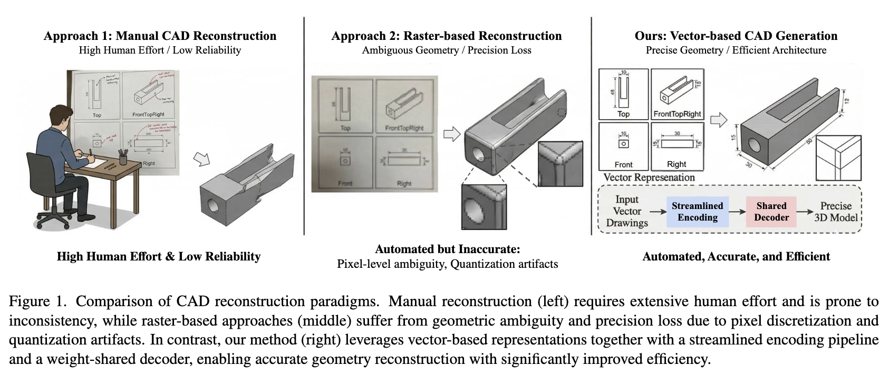
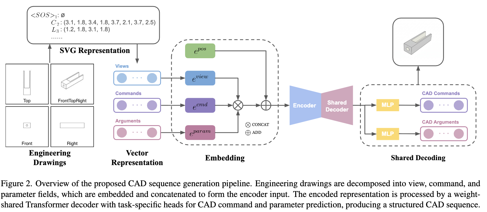

Maintaining precise geometric dimensions is critical in Computer-Aided Design (CAD). Recent works have utilized various representations for 3D generative modeling, such as voxels, point clouds, and polygon meshes. In parametric CAD generation, approaches using Scalable Vector Graphics (SVG) have demonstrated superior performance in preserving precise dimensions. However, although industrial applications require efficient operation on limited hardware, existing architectures incur additional computational costs due to redundant structural components. In this paper, we propose two methods to address these efficiency challenges. First, we remove redundant MLP layers to simplify the encoding process. Second, we adopt a weight-shared single-decoder (shared decoder) to unify command and parameter prediction. To train and evaluate our methods, we use the CAD-VGDrawing dataset. Our method achieves comparable generation accuracy while significantly reducing model size and inference time.
Drawing2CAD applies an MLP after concatenating view/command/parameter embeddings to facilitate cross-field interactions. We observe that the categorical cardinality of these fields is extremely low (4 views, 4 command tokens), so a learned linear mixer is unnecessary. Removing it lets the Transformer encoder's self-attention alone capture cross-field interactions. The encoder self-attention maps (Figure 4) confirm that structural attention patterns are preserved — and even sharper — without the MLP.
Drawing2CAD uses a dual-decoder design (one for CAD command types, one for parameters), wired via command-guided generation. We replace this with a single Transformer decoder shared across both tasks, with separate task-specific output heads (MLP_cmd, MLP_param). The shared backbone implicitly encodes command-parameter dependencies, removing the need for explicit cross-decoder guidance.
Combined, these reduce parameters by 64.74% (10.1M → 3.6M) and inference time by 8.6% on the test set, with negligible accuracy loss.

| Method | Parameters | File Size (MB) | Inf. Time (s) | ACCcmd | ACCparam |
|---|---|---|---|---|---|
| Baseline (Drawing2CAD) | 10,109,894 | 38.57 | 8.4815 | 82.76 | 79.23 |
| Shared Decoder | 7,722,438 | 29.46 | 8.4329 | 82.42 | 79.13 |
| Shared + w/o MLP (256) | 7,745,850 | 29.55 | 8.3925 | 82.20 | 79.21 |
| Shared + w/o MLP (192) | 5,204,234 | 19.85 | 8.4447 | 82.17 | 78.87 |
| Shared + w/o MLP (144) | 3,564,806 | 13.60 | 7.7575 | 82.37 | 78.55 |
Our smallest configuration, Shared + w/o MLP (144), delivers a 64.74% reduction in parameters (10.1M → 3.6M) and an 8.6% inference speedup over the Drawing2CAD baseline. Despite the dramatic compression, command accuracy stays within 0.5% and parameter accuracy within 0.9% of the baseline — making this configuration the most attractive operating point for resource-constrained CAD applications.
@inproceedings{kim2026swiftcad,
title={SwiftCAD: Efficient Parametric CAD Generation with Shared Decoder Transformers},
author={Juyoung Kim and Seongjun Choi and Jiyeon Lim and Soomok Lee},
booktitle={Proceedings of the IEEE/CVF Conference on Computer Vision and Pattern Recognition Workshops (CVPRW)},
year={2026}
}We thank the authors of Drawing2CAD (Qin et al., 2025) for releasing their codebase and the CAD-VGDrawing dataset, which serve as the foundation for this work. We also gratefully acknowledge the DeepCAD project, the FreeCAD community, and the CairoSVG developers, whose tools enabled our data preparation pipeline.
This site uses the Nerfies project page template, available under a Creative Commons Attribution-ShareAlike 4.0 International License.